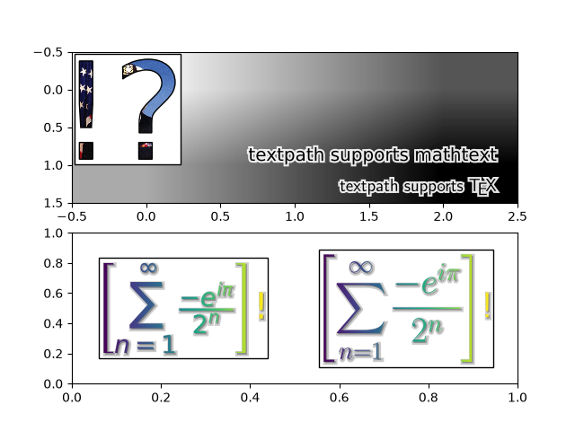

Note
Go to the end to download the full example code.
Using a text as a Path#
TextPath creates a Path that is the outline of the characters of a text.
The resulting path can be employed e.g. as a clip path for an image.

from PIL import Image
import matplotlib.pyplot as plt
import numpy as np
from matplotlib.cbook import get_sample_data
from matplotlib.image import BboxImage
from matplotlib.offsetbox import AnchoredOffsetbox, AnnotationBbox, AuxTransformBox
from matplotlib.patches import PathPatch, Shadow
from matplotlib.text import TextPath
from matplotlib.transforms import IdentityTransform
class PathClippedImagePatch(PathPatch):
"""
The given image is used to draw the face of the patch. Internally,
it uses BboxImage whose clippath set to the path of the patch.
FIXME : The result is currently dpi dependent.
"""
def __init__(self, path, bbox_image, **kwargs):
super().__init__(path, **kwargs)
self.bbox_image = BboxImage(
self.get_window_extent, norm=None, origin=None)
self.bbox_image.set_data(bbox_image)
def set_facecolor(self, color):
"""Simply ignore facecolor."""
super().set_facecolor("none")
def draw(self, renderer=None):
# the clip path must be updated every draw. any solution? -JJ
self.bbox_image.set_clip_path(self._path, self.get_transform())
self.bbox_image.draw(renderer)
super().draw(renderer)
if __name__ == "__main__":
fig, (ax1, ax2) = plt.subplots(2)
# EXAMPLE 1
arr = Image.open(get_sample_data("grace_hopper.jpg"))
text_path = TextPath((0, 0), "!?", size=150)
p = PathClippedImagePatch(text_path, arr, ec="k")
# make offset box
offsetbox = AuxTransformBox(IdentityTransform())
offsetbox.add_artist(p)
# make anchored offset box
ao = AnchoredOffsetbox(loc='upper left', child=offsetbox, frameon=True,
borderpad=0.2)
ax1.add_artist(ao)
# another text
for usetex, ypos, string in [
(False, 0.25, r"textpath supports mathtext"),
(True, 0.05, r"textpath supports \TeX"),
]:
text_path = TextPath((0, 0), string, size=20, usetex=usetex)
p1 = PathPatch(text_path, ec="w", lw=3, fc="w", alpha=0.9)
p2 = PathPatch(text_path, ec="none", fc="k")
offsetbox2 = AuxTransformBox(IdentityTransform())
offsetbox2.add_artist(p1)
offsetbox2.add_artist(p2)
ab = AnnotationBbox(offsetbox2, (0.95, ypos),
xycoords='axes fraction',
boxcoords="offset points",
box_alignment=(1., 0.),
frameon=False,
)
ax1.add_artist(ab)
ax1.imshow([[0, 1, 2], [1, 2, 3]], cmap="gist_gray_r",
interpolation="bilinear", aspect="auto")
# EXAMPLE 2
arr = np.arange(256).reshape(1, 256)
for usetex, xpos, string in [
(False, 0.25,
r"$\left[\sum_{n=1}^\infty\frac{-e^{i\pi}}{2^n}\right]$!"),
(True, 0.75,
r"$\displaystyle\left[\sum_{n=1}^\infty"
r"\frac{-e^{i\pi}}{2^n}\right]$!"),
]:
text_path = TextPath((0, 0), string, size=40, usetex=usetex)
text_patch = PathClippedImagePatch(text_path, arr, ec="none")
shadow1 = Shadow(text_patch, 1, -1, fc="none", ec="0.6", lw=3)
shadow2 = Shadow(text_patch, 1, -1, fc="0.3", ec="none")
# make offset box
offsetbox = AuxTransformBox(IdentityTransform())
offsetbox.add_artist(shadow1)
offsetbox.add_artist(shadow2)
offsetbox.add_artist(text_patch)
# place the anchored offset box using AnnotationBbox
ab = AnnotationBbox(offsetbox, (xpos, 0.5), box_alignment=(0.5, 0.5))
ax2.add_artist(ab)
ax2.set_xlim(0, 1)
ax2.set_ylim(0, 1)
plt.show()